At Fatin's Florette, we believe that every moment deserves a touch of nature's beauty. What started as a small passion project has blossomed into a dedicated floral studio serving the heart of Brunei.
What started in 2020 as a simple passion for decorating a bedroom with dried flowers has blossomed into something far greater. Fatin's Florette has grown from a humble personal project into a full-fledged flower studio in Bengkurong, Brunei.
Today, we've expanded beyond our studio walls—reaching across districts and distances to share the love and techniques of floral artistry through hands-on workshops and curated products.
Our offerings have evolved to include:
We cater to every moment—birthdays, graduations, anniversaries, or simply "just because." Because we believe every occasion, big or small, deserves to be celebrated with beauty.
When words fail to express what the heart feels, we hope to continue delivering art and emotion through the universal language of flowers.
From our studio to your story—bloom with us.
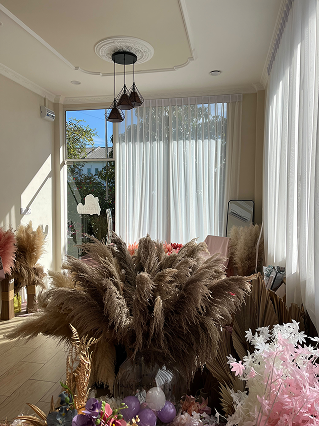
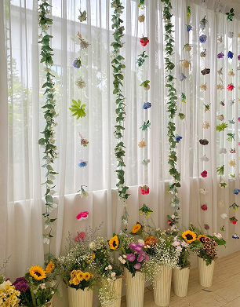
Join us for an immersive floral experience. Whether you're a beginner or a flower enthusiast, our hands-on workshops are designed to teach you the art of floral arrangement in a fun, relaxed environment.
Grab your friends and spend the day creating beautiful bouquets, learning from our expert florists, and taking home your very own masterpiece.
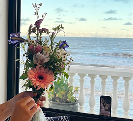
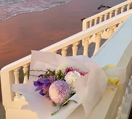
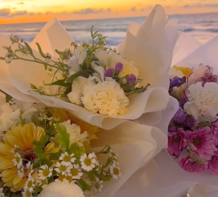
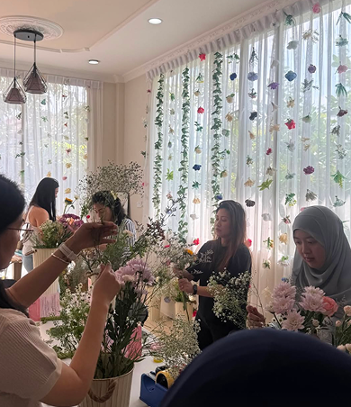
Founder & Lead Florist
The creative, talented and passionate florist and owner of Fatin's Florette, a unique homebased floral boutique & studio located at Kg Bengkurong, that has quickly become a symbol of creativity and sophistication in town.
At just 27 years old, Fatin is a true hustler, constantly expanding her horizons and achieving remarkable milestones. Fatin is a strong believer in lifelong learning and personal growth.
Having completed her Bachelor's Degree in Malaysia, Fatin has gained valuable experiences and built a strong network of like-minded professionals in her field.
Fatin's passion also extends beyond academia. She actively participates as a member of the Brunei Malay Chamber of Commerce & Industry, fostering connections and promoting cultural exchange. Her enthusiasm for her work, coupled with her determination to succeed, sets her apart.
Moreover, Fatin is an advocate for diversity and inclusion, recognizing the power of unity and embracing different perspectives and backgrounds. With her drive, ambition, and impressive achievements, Fatin is making a name for herself in the florist industry.
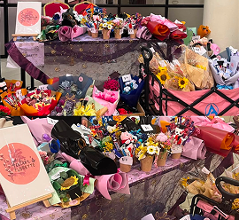
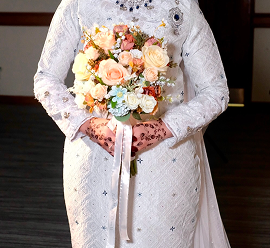
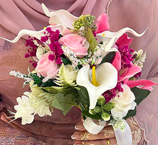
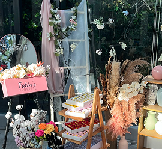
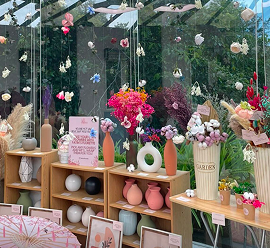
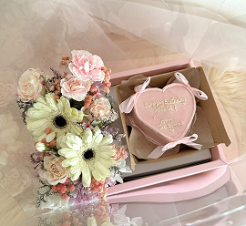
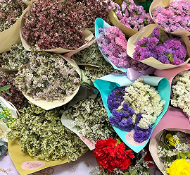
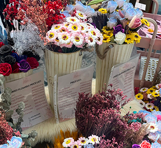
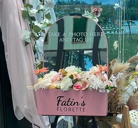